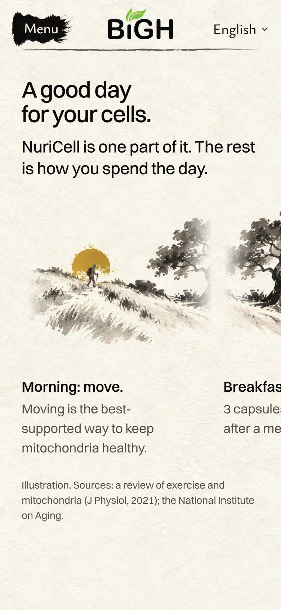
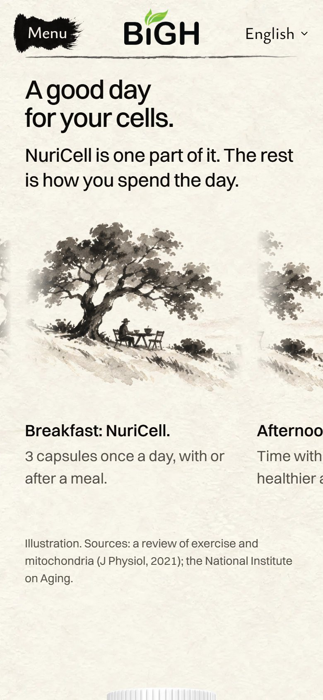
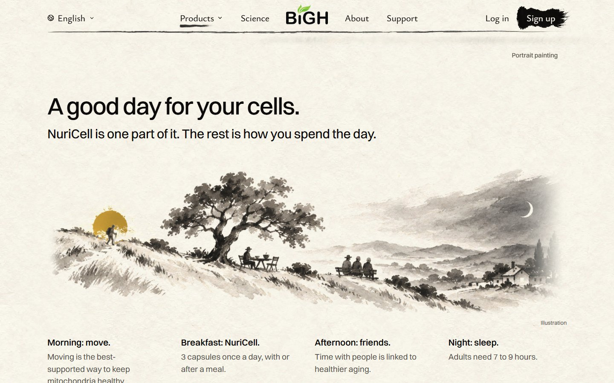
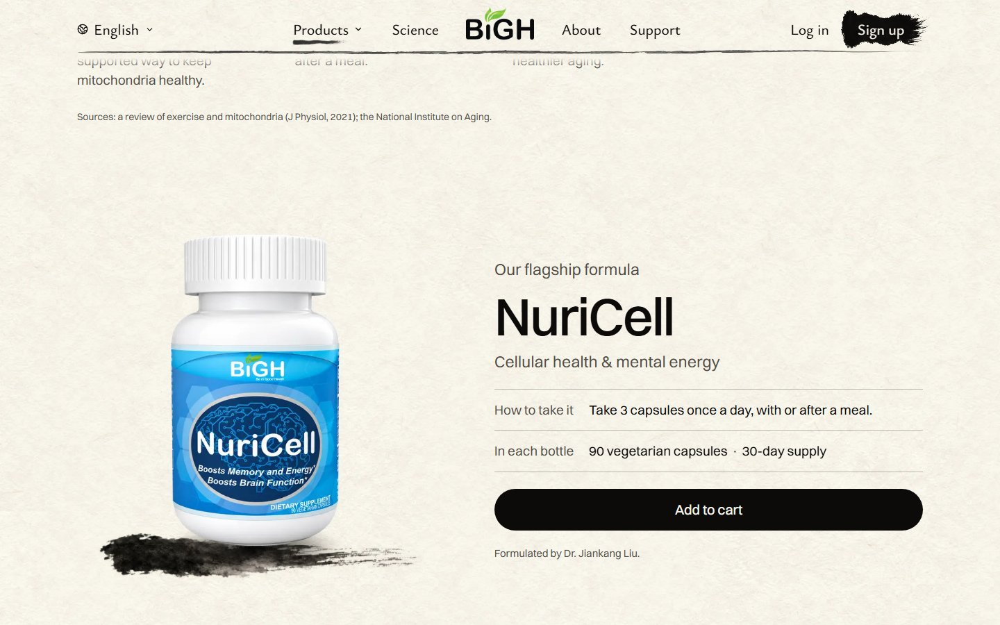
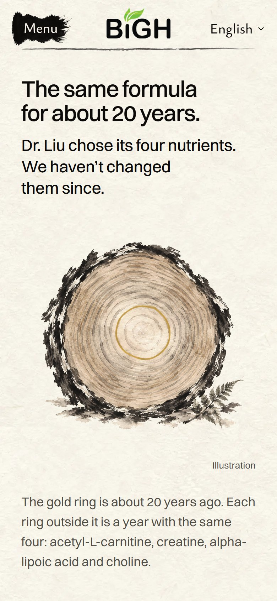
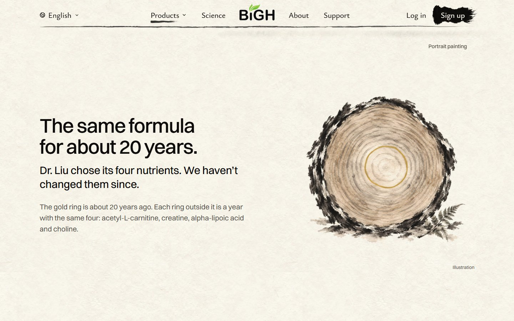

<title>NuriCell How to Take It</title>
<meta name="claude:viewport-fit-sides" content="cover">
<link rel="preconnect" href="https://fonts.googleapis.com">
<link rel="preconnect" href="https://fonts.gstatic.com" crossorigin>
<link rel="stylesheet" href="https://fonts.googleapis.com/css2?family=Ysabeau:wght@500;600&display=swap">
<style>
  /* One calm column on rice paper, like the site: pick an idea at the top, see it on a phone and a laptop, read why. */
  :root {
    --paper: #f8f3ea;
    --paper-deep: #efe7d8;
    --ink: #0c0b0a;
    --ink-soft: #514e48;
    --rule: #d9cfbd;
    --gold: #a8842c;
    --display: "Ysabeau", "Iowan Old Style", Georgia, serif;
    --body: "Helvetica Neue", Arial, system-ui, sans-serif;
    color-scheme: light;
  }
  body {
    background: var(--paper);
    color: var(--ink);
    font: 17px/1.55 var(--body);
  }
  body::before {
    content: "";
    position: fixed;
    inset: 0 0 auto;
    height: env(safe-area-inset-top, 0px);
    z-index: 10;
    background: var(--paper);
  }
  .page {
    max-width: 920px;
    margin: 0 auto;
    padding-block: 36px 64px;
    padding-left: max(16px, env(safe-area-inset-left, 0px));
    padding-right: max(16px, env(safe-area-inset-right, 0px));
    display: grid;
    gap: 28px;
  }
  header { display: grid; gap: 10px; }
  .eyebrow { margin: 0; color: var(--ink-soft); font-size: 15px; }
  h1 {
    margin: 0;
    font: 600 clamp(32px, 6vw, 46px)/1.08 var(--display);
    letter-spacing: -0.01em;
    text-wrap: balance;
  }
  .lede { margin: 0; font-size: 19px; max-width: 34em; }

  /* The switch stays in reach while scrolling a tall phone shot. */
  .switch {
    position: sticky;
    top: env(safe-area-inset-top, 0px);
    z-index: 5;
    background: var(--paper);
    padding-block: 10px;
    border-bottom: 1px solid var(--rule);
    display: grid;
    grid-template-columns: repeat(3, minmax(0, 1fr));
    gap: 6px;
  }
  .switch button {
    display: grid;
    gap: 2px;
    justify-items: center;
    min-height: 56px;
    padding: 8px 4px;
    border: 1px solid var(--ink);
    border-radius: 12px;
    background: transparent;
    color: var(--ink);
    cursor: pointer;
    font: inherit;
  }
  .switch .tag { font: 600 22px/1 var(--display); }
  .switch .word { font-size: 14px; line-height: 1.2; color: var(--ink-soft); }
  .switch button[aria-pressed="true"] { background: var(--ink); color: var(--paper); }
  .switch button[aria-pressed="true"] .word { color: var(--paper); }
  .switch button.pick { border: 2px solid var(--gold); }
  .switch button:focus-visible { outline: 2px solid var(--gold); outline-offset: 2px; }

  .idea { display: grid; gap: 22px; }
  .idea h2 { margin: 0; font: 600 30px/1.15 var(--display); text-wrap: balance; }
  .idea h2 small { display: block; margin-top: 4px; font: 500 15px/1.4 var(--body); color: var(--gold); }
  .what { margin: 0; font-size: 18px; max-width: 36em; }
  .score { margin: 0; font: 600 24px/1.2 var(--display); }
  .score b { color: var(--gold); font-weight: 600; }
  h3 { margin: 0; font: 600 20px/1.2 var(--display); }
  .shots { display: grid; gap: 16px; grid-template-columns: repeat(auto-fit, minmax(min(100%, 300px), 1fr)); }
  .shots.wide { grid-template-columns: 1fr; }
  figure { margin: 0; display: grid; gap: 8px; align-content: start; min-width: 0; }
  .shot {
    display: block;
    width: 100%;
    height: auto;
    border: 1px solid var(--rule);
    border-radius: 6px;
    background: var(--paper-deep);
  }
  .phone .shot { max-width: 390px; }
  figcaption { font-size: 14px; color: var(--ink-soft); }
  .block { display: grid; gap: 10px; }
  ul { margin: 0; padding-left: 1.2em; display: grid; gap: 6px; max-width: 40em; }
  .small { margin: 0; font-size: 14px; color: var(--ink-soft); max-width: 40em; }
</style>

<main class="page">
  <header>
    <p class="eyebrow">NuriCell · the chapter before Buy · round 3</p>
    <h1>Two new things to say here</h1>
    <p class="lede">“3 capsules a day” is too thin for a whole chapter, and the buy box right under it already says it. These two ideas say something stronger in its place.</p>
  </header>

  <nav class="switch" aria-label="Pick an idea">
    <button type="button" id="pick-now" data-show="now" aria-pressed="false"><span class="tag">Now</span><span class="word">live</span></button>
    <button type="button" id="pick-1" data-show="day" aria-pressed="true" class="pick"><span class="tag">1</span><span class="word">A good day</span></button>
    <button type="button" id="pick-2" data-show="rings" aria-pressed="false"><span class="tag">2</span><span class="word">20 years</span></button>
  </nav>

  <section class="idea" data-idea="now" hidden>
    <h2>Now, on the page</h2>
    <p class="what">The egg cup, a brushed 3 × 30 = 90, then the sentence in small grey type.</p>
    <div class="block phone">
      <h3>On a phone</h3>
      <div class="shots"><figure></figure></div>
    </div>
    <div class="block">
      <h3>On a laptop</h3>
      <div class="shots wide"><figure></figure></div>
    </div>
  </section>

  <section class="idea" data-idea="day">
    <h2>1 · A good day for your cells<small>My pick</small></h2>
    <p class="what">One new painting of a California day on a hillside: a morning walk into a gold-leaf sun, breakfast under an oak, friends on a bench, a farmhouse at night. One true line under each moment. NuriCell is one part of the day, at breakfast.</p>
    <p class="score">My score: <b>8.5 / 10</b></p>
    <div class="block phone">
      <h3>On a phone</h3>
      <div class="shots">
        <figure><figcaption>One moment at a time. The next one peeks in, so you know to swipe.</figcaption></figure>
        <figure><figcaption>After one swipe: breakfast, with the dose.</figcaption></figure>
      </div>
    </div>
    <div class="block">
      <h3>On a laptop</h3>
      <div class="shots wide">
        <figure><figcaption>The whole day in one painting, a line under each moment.</figcaption></figure>
        <figure><figcaption>Then the bottle and its buy box.</figcaption></figure>
      </div>
    </div>
    <div class="block">
      <h3>What holds it back</h3>
      <ul>
        <li>The breakfast scene doesn't show the capsules. Only the words do.</li>
        <li>On a phone, people must swipe to see all four moments. Some won't.</li>
        <li>I'd check each of the four lines against its source again before it goes live.</li>
      </ul>
    </div>
  </section>

  <section class="idea" data-idea="rings" hidden>
    <h2>2 · The same formula for about 20 years</h2>
    <p class="what">One new painting: the cut end of a young California redwood. One ring is laid in gold leaf, about 20 years in from the bark. Every ring outside it is a year with the same four nutrients.</p>
    <p class="score">My score: <b>8 / 10</b></p>
    <div class="block phone">
      <h3>On a phone</h3>
      <div class="shots"><figure></figure></div>
    </div>
    <div class="block">
      <h3>On a laptop</h3>
      <div class="shots wide"><figure></figure></div>
    </div>
    <div class="block">
      <h3>What holds it back</h3>
      <ul>
        <li>“About 20 years” needs your real start year before it goes live.</li>
        <li>You need the small grey line to know what the gold ring means.</li>
        <li>The black bark is the heaviest ink in that part of the page.</li>
      </ul>
    </div>
  </section>

  <p class="small">Mockups only: placed on the real page with the real fonts. Nothing on the site has changed.</p>
</main>

<script>
  const buttons = document.querySelectorAll(".switch button");
  const ideas = document.querySelectorAll("[data-idea]");
  function show(key, scroll) {
    if (![...ideas].some((s) => s.dataset.idea === key)) return;
    buttons.forEach((b) => b.setAttribute("aria-pressed", String(b.dataset.show === key)));
    ideas.forEach((s) => { s.hidden = s.dataset.idea !== key; });
    if (scroll) document.querySelector(".switch").scrollIntoView({ block: "start" });
  }
  buttons.forEach((b) => b.addEventListener("click", () => show(b.dataset.show, window.scrollY > 300)));
  show(location.hash.slice(1) || "day", false);
</script>
